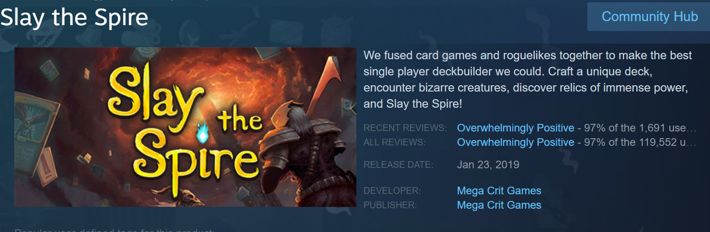
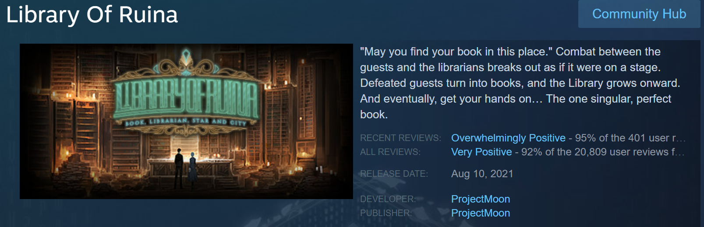
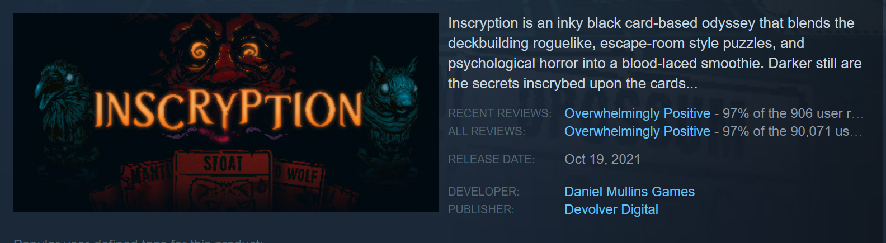

Deckbuilders have translated into the video game space quite recently. In 2017, Slay the Spire entered Steam Early Access and exploded in popularity afterward. The genre translates very well into the virtual space, with resources and cost easily calculated by the computer and new features that can be simulated. Most deckbuilders employ roguelike elements, which are generally mechanics that revolve around resetting with slightly more progression every time you lose. Unique deckbuilder video games are stil made to this day, and many prominent board game deckbuilders such as Dominion or Star Realms have been translated into the virtual space to expand upon their playerbase. Here are some notable video game deckbuilders:
Slay the Spire was one of the first ever video game deckbuilders to become popular. It is a roguelike game where you choose a character with a specific set of starter cards and ascend a tower full of monsters. You are supposed to lose and return to ascending the tower from the first floor, often with new knowldge and new unlocked items and cards.
Screenshot from Steam.
Entering Early Access in 2020 but fully released in 2021 by Project Moon, Library of Ruina is set in a dystopian cyberpunk world with fantastical elements. It has an amazing story an a stellar soundtrack. Be warned though, the difficulty spikes are vertical.
Screenshot from Steam.
A game by Daniel Mullins and published by Devolver Digital, Inscryption released in 2021 and is an incredibly fun game with a spooky atmosphere and amazing storytelling. You find yourself in a mysterious cabin with a gamemaster that forces you to play a deckbuilding game not dissimilar to Slay the Spire, and as you progress you can solve cryptic puzzles to learn more about why you're here and why the game exists. It has an Overwhelmingly Positive rating on Steam and should be played this Halloween.
Screenshot from Steam.